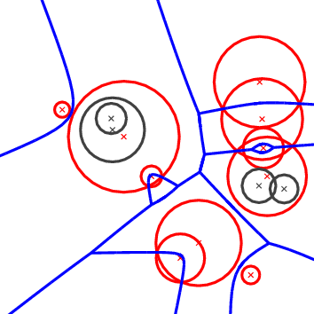
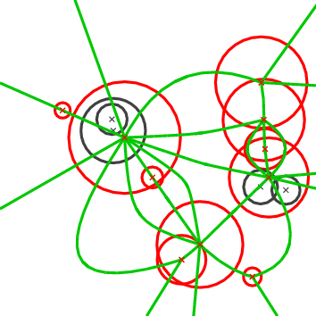
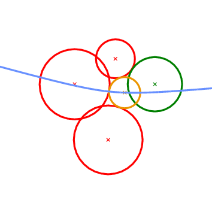
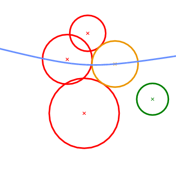
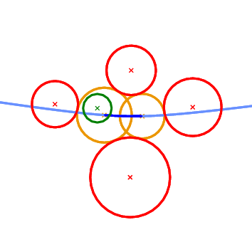
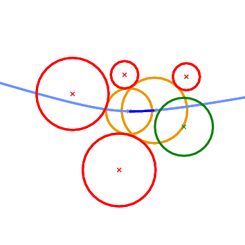
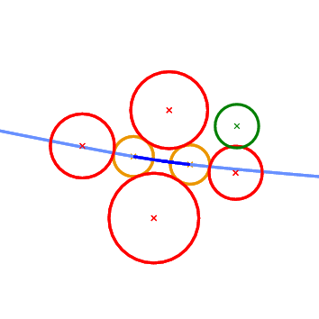
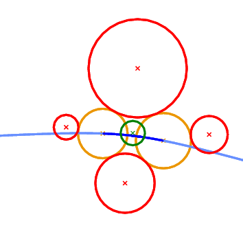
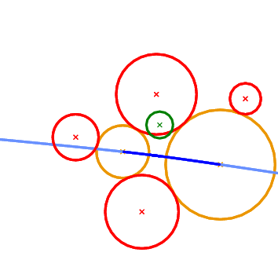
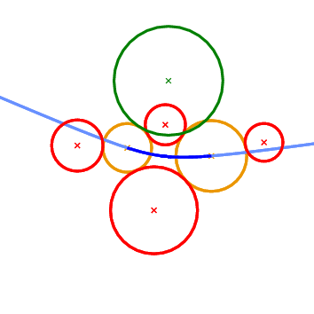

|
CGAL 6.2 - 2D Apollonius Graphs (Delaunay Graphs of Disks)
|
Loading...
Searching...
No Matches
|
CGAL 6.2 - 2D Apollonius Graphs (Delaunay Graphs of Disks)
|
This chapter describes the two-dimensional Apollonius graph of CGAL. We start with a few definitions in Section Definitions. The software design of the 2D Apollonius graph package is described in Section Software Design. In Section The Geometric Traits we discuss the geometric traits of the 2D Apollonius graph package and in Section The Apollonius Graph Hierarchy the Apollonius graph hierarchy, a data structure suitable for fast nearest neighbor queries, is briefly described.

|

|
Figure 57.1 The Apollonius diagram (left) and its dual the Apollonius graph (right).
The 2D Apollonius graph class of CGAL is designed to compute the dual of the Apollonius diagram or, as it is also known, the Additively weighted Voronoi diagram. The algorithm that has been implemented is dynamic, which means that we can perform insertions and deletions on line. The corresponding CGAL class is called Apollonius_graph_2<ApolloniusGraphTraits_2,ApolloniusGraphDataStructure_2> and will be discussed in more detail in the sequel. The interested reader may want to refer to the paper by Karavelas and Yvinec [5] for the general idea as well as the details of the algorithm implemented.
Before describing the details of the implementation we make a brief introduction to the theory of Apollonius diagrams. The Apollonius diagram is defined over a set of sites \( P_i=(c_i,w_i)\), \( i=1,\ldots,n\), where \( c_i\) is the point and \( w_i\) the weight of \( P_i\). It is a subdivision of the plane into connected regions, called cells, associated with the sites (see Figure 57.1 (left)). The cell of a site \( P_i\) is the locus of points on the plane that are closer to \( P_i\) than any other site \( P_j\), \( j\neq i\). The distance \( \delta(x, P_i)\) of a point \( x\) in the plane to a site \( P_i\) is defined as:
\[ \delta(x,P_i)=\|x-c_i\|-w_i, \]
where \( \|\cdot\|\) denotes the Euclidean norm. It can easily be seen that it is a generalization of the Voronoi diagram for points, which can actually be obtained if all the weights \( w_i\) are equal. Unlike the case of points, however, it is possible that a site \( P_i\) might have an empty cell. This can also happen in the case of the power diagram, whose dual is the regular triangulation (see Section Regular Triangulations ). If this is the case we call the site hidden (these are the black circles in Figure 57.1 ). A site which is not hidden will be referred to as visible.
If all weights \( w_i\) are non-negative, the Apollonius diagram can be viewed as the Voronoi diagram of the set of circles \( \{P_1,\ldots, P_n\}\), where \( c_i\) is the center of the circle \( P_i\) and \( w_i\) its radius. If the weights are allowed to be negative, we need to go to 3D in order to explain what the Apollonius diagram means geometrically. We identify the 2D Euclidean plane with the \( xy\)-plane in 3D. Then the Voronoi diagram of a set of points can be seen as the vertical projection on the \( xy\)-plane of the lower envelope of a set of 3D cones defined as follows: for each point \( p\) in the set of 2D points we have a cone \( C_p\) whose apex is the point \( p\). The axis of \( C_p\) is a line parallel to the \( z\)-axis passing through \( p\), the angle of \( C_p\) is \( 45^\circ\) and, finally \( C_p\) is facing in the positive \( z\)-direction (that is, \( C_p\) is contained in the positive \( z\)-halfspace). The Apollonius diagram corresponds to shifting the apexes of these cones in the \( z\)-direction by a quantity equal to the weight. Sites with negative weight will give rise to cones whose apex is in the negative \( z\)-halfspace and sites with positive weight will give rise to cones whose apex is in the positive \( z\)-halfspace. In a manner analogous to the case of points, the Apollonius diagram can then be defined as the vertical projection on the \( xy\)-plane of the lower envelope of the set of shifted cones. Notice that when all apexes are translated along the \( z\)-direction by the same amount, the projection of the lower envelope of the set of cones does not change. In particular, we can translate all cones by a large enough amount so that all apexes are in the positive \( z\)-halfspace. Algebraically, this means that the Apollonius diagram does not change if we add to all weights the same quantity, which in particular, implies that we can assume without loss of generality that all weights are positive. Given the observations above and in order to simplify our discussion of Apollonius diagrams, we will, from now on, assume that all weights are positive, and we will refer to the sites as circles.
The Apollonius diagram is a planar graph, and so is its dual, the Apollonius graph. There are many ways to embed it on the plane and one such way is shown in Figure 57.1 (right). The Apollonius graph is uniquely defined once we have the Apollonius diagram. If the circles are in general position (see precise definition below), then the Apollonius graph is a graph with triangular faces away from the convex hull of the set of circles (by triangular we mean that every face has exactly three edges). Near the convex hull we may have some spikes (i.e., vertices of degree 1). To unify our approach and handling of the Apollonius graph we add to the set of (finite) circles a fictitious circle at infinity, which we call the site at infinity. We can then connect all vertices of the outer face of the Apollonius graph to the site at infinity which gives us a graph with the property that all of its faces are now triangular. However, the Apollonius graph is not a triangulation for two main reasons: we cannot always embed it on the plane with straight line segments that yield a triangulation and, moreover, we may have two faces of the graph that have two edges in common, which is not allowed in a triangulation. Both of these particularities appear when we consider the Apollonius graph of the set of circles in Figure 57.1.
We would like to finish our brief introduction to the theory of Apollonius graphs by discussing the concept of general position. We say that a set of circles is in general position if no two triplets of circles have the same tritangent circle. This statement is rather technical and it is best understood in the context of points. The equivalent statement for points is that we have no two triplets of points that define the same circumcircle, or equivalently that no four points are co-circular. The statement about general position made above is a direct generalization of the (much simpler to understand) statement about points. On the contrary, when we have circles in degenerate position, the Apollonius graph has faces with more than three edges on their boundary. We can get a triangulated version of the graph by simply triangulating the corresponding faces in an arbitrary way. In fact the algorithm that has been implemented in CGAL has the property that it always returns a valid triangulated version of the Apollonius graph. By valid we mean that it contains the actual Apollonius graph (i.e., the actual dual of the Apollonius diagram) and whenever there are faces with more than three faces then they are triangulated. The way that they are triangulated depends on the order of insertion and deletion of the circles in the diagram.
One final point has to be made about hidden circles. First of all we would like to be more precise about our definition of hidden circles: we say that a circle is hidden if its cell has empty interior. This definition allows us to guarantee that all visible circles have cells that are two-dimensional regions. Geometrically the fact that a circle is hidden means that it is contained in the closure of the disk of another circle (see again Figure 57.1 ). Note that a circle contained in the union of several disks, but not in the closure of any one of them, is not hidden.
Hidden circles pose an additional difficulty to our algorithm and software design. Since we allow circles to be inserted and deleted at wish, it is possible that a circle that was hidden at some point in time, may become visible at a later point in time; for example this can happen if we delete the circle that hides it. For this purpose we store hidden circles and have them reappear when they become visible. We will discuss this issue in detail below. For the time being it suffices to say that the user has the ability to control this behavior. More specifically it is possible to discard the circles that become hidden. This choice is totally natural when for example we expect to do only insertions, since in this case a circle that becomes hidden will never reappear. On the other hand if deletions are expected as well, then we lose the ability to have the hidden circles reappear.
Degenerate Dimensions.
The dimension of the Apollonius graph is in general 2. The exceptions to this rule are as follows:
The 2D Apollonius graph class Apollonius_graph_2<ApolloniusGraphTraits_2,ApolloniusGraphDataStructure_2> follows the design of the triangulation packages of CGAL. It is parametrized by two arguments:
ApolloniusGraphDataStructure_2, which in fact is a refinement of the TriangulationDataStructure_2 concept. The class Triangulation_data_structure_2<Vb,Fb> is a model of the concept ApolloniusGraphDataStructure_2. A default value for the corresponding template parameter is provided, so the user does not need to specify it. Storing Hidden Sites.
As we have already mentioned a circle is hidden if it is contained inside some visible circle. This creates a parent-child relationship between visible and hidden circles: the parent of a hidden circle is the visible circle that contains it. If more than one visible circles contain a hidden circle then the hidden circle can be assigned to any of the visible circles arbitrarily.
To store hidden circles we assign to every visible circle a list. This list comprises the hidden circles that are contained in the visible circle. The user can access the hidden circles associated with a visible circle through an iterator called Hidden_sites_iterator. This iterator is defined in the ApolloniusGraphVertexBase_2 concept and is implemented by its model, the Apollonius_graph_vertex_base_2<Gt,StoreHidden> class. It is also possible to iterate through the entire set of hidden sites using an homonymous iterator defined by the Apollonius_graph_2<Gt,Agds> class.
Since storing hidden sites may not be of interest in some cases (e.g., for example this is the case if we only perform insertions in the Apollonius graph), the user has the possibility of controlling this behavior. More precisely, the class Apollonius_graph_vertex_base_2<Gt,StoreHidden> has two template parameters, the second of which is a Boolean value. This value is by default true and it indicates that hidden sites should be stored. The user can indicate that hidden sites may be discarded by setting this value to false.
The predicates required for the computation of the Apollonius graph are rather complicated. It is not the purpose of this document to discuss them in detail. The interested reader may refer to the papers by Karavelas and Emiris for the details [3], [4]. However, we would like to give a brief overview of what they compute. There are several predicates needed by this algorithm. We will discuss the most important/complicated ones. It turns out that it is much easier to describe them in terms of the Apollonius diagram, rather than the Apollonius graph. Whenever it is applicable we will also describe their meaning in terms of the Apollonius graph.
The first two geometric predicates are called Is_hidden_2 and Oriented_side_of_bisector_2. The first one involves two circles, say \( P_1\) and \( P_2\). It determines if \( P_1\) is hidden with respect to \( P_2\); more precisely it checks whether the circle \( P_1\) is contained in the closure of the disk defined by the circle \( P_2\). As its name indicates, it determines if a circle is hidden or not. The second predicate involves two circles \( P_1\) and \( P_2\) and a point \( q\). It answers the question whether \( q\) is closer to \( P_1\) or \( P_2\). Its name stems from the fact that answering the aforementioned question is equivalent to determining the oriented side of the bisector of \( P_1\) and \( P_2\) that contains the query point \( q\). This predicate is used by the algorithm for closest neighbor queries for points.
The next geometric predicate is called Vertex_conflict_2 and it involves four circles \( P_1\), \( P_2\), \( P_3\), and \( P_4\) (see Figure 57.2 ). The first three (red circles in Figure 57.2 ) define a tritangent circle (yellow circle in Figure 57.2 ). What we want to determine is the sign of the distance of the green circle from the yellow circle. The distance between two circles \( K_1=(c_1,r_1)\) and \( K_2=(c_2, r_2)\) is defined as the distance of their centers minus their radii:
\[ \delta(K_1, K_2) = \|c_1-c_2\|-r_1-r_2. \]
This predicate determines if a vertex in the Apollonius diagram (the center of the yellow circle) is destroyed when a new circle is inserted in the diagram (the green circle). In the Apollonius graph it tells us if a triangular face of the diagram is to be destroyed or not.

|

|
Figure 57.2 The Vertex_conflict_2 predicate. The left-most, bottom-most and top-most circles define the tritangent circle in the middle. We want to determine the sign of the distance of the left-most circle from the one in the middle. The almost horizontal curve is the bisector of the top-most and bottom-most circles. Left: the predicate returns NEGATIVE. Right: the predicate returns POSITIVE.
What we essentially want to compute when we construct incrementally a Voronoi diagram, is whether the object to be inserted destroys an edge of the Voronoi diagram or not. In the case of points this is really easy and it amounts to the well known incircle test. In the case of circles the situation is more complicated. We can have six possible outcomes as to what portion of an edge of the Apollonius diagram the new circle destroys (see Figure 57.3 ). The first two can be answered directly by the Vertex_conflict_2 predicate evaluated for the two endpoints of the Apollonius diagram edge. This is due to the fact that the value of the Vertex_conflict_2 predicate is different for the two endpoints. If the two values are the same then we need an additional test which determines if the interior of the Apollonius diagram edge is destroyed by the new circle. This is what the Finite_edge_interior_conflict_2 and Infinite_edge_interior_conflict_2 predicates do. In essence, it is the same predicate (same idea) applied to two different types of edges in the Apollonius diagram: a finite or an infinite edge. An edge is infinite if its dual edge in the Apollonius graph connects the site at infinity with the vertex corresponding to a (finite) circle; otherwise it is a finite edge.

|

|

|

|

|

|
Figure 57.3 The 6 possible outcomes of the Finite_edge_interior_conflict_2 predicate. Top left: only a neighborhood around the left-most endpoint of the edge will be destroyed. Top right: only a neighborhood around the right-most endpoint of the edge will be destroyed. Middle left: no portion of the edge is destroyed. Middle right: the entire edge will be destroyed. Bottom left: a neighborhood in the interior of the edge will be destroyed; the regions near the endpoints remain unaffected. Bottom right: The neighborhood around the two endpoints will be destroyed, but an interval in the interior of the edge will remain in the new diagram.
The last predicate that we want to discuss is called Is_degenerate_edge_2. It tells us whether an edge in the Apollonius diagram is degenerate, that is if its two endpoints coincide. In the Apollonius graph such an edge corresponds to one of the additional edges that we use to triangulate the non-triangular faces.
The aforementioned predicates are part of the ApolloniusGraphTraits_2 concept of CGAL. CGAL also provides a model for this concept, the Apollonius_graph_traits_2<K,Method_tag> class. The first template parameter of this class must be a model of the Kernel concept. The second template parameter is a tag that indicates what operations are allowed in the computations that take place within the traits class. The two possible values of the Method_tag parameter are Integral_domain_without_division_tag and Field_with_sqrt_tag. When Integral_domain_without_division_tag is used, only ring operations are used during the evaluation of the predicates, whereas if Field_with_sqrt_tag is chosen, all four field operations, as well as square roots, are used during the predicate evaluation.
The Apollonius_graph_traits_2<K,Method_tag> class provides exact predicates if the number type in the kernel K is an exact number type. This is to be associated with the type of operations allowed for the predicate evaluation. For example MP_Float as number type, with Integral_domain_without_division_tag as tag will give exact predicates, whereas MP_Float with Field_with_sqrt_tag will give inexact predicates.
Although exact number types provide exact predicates and constructions, their use often results in unacceptably large runtimes. The class Apollonius_graph_filtered_traits_2<CK,CM,EK,EM,FK,FM> aims to paliate this shortcoming. Similar to a filtered kernel, it takes a constructions kernel CK, a filtering kernel FK and an exact kernel EK, as well as the corresponding tags (CM, FM and EM, respectively). Predicates are evaluated by first using the filtering kernel, and if this fails the evaluation is performed using the exact kernel, thus yielding exact predicates at a generally much cheaper cost than directly using an exact number type. The constructions are done using the kernel CK, which means that they are not necessarily exact. All template parameters except CK have default values, which are explained in the reference manual.
The Apollonius_graph_hierarchy_2<ApolloniusGraphTraits_2,ApolloniusGraphDataStructure_2> class is nothing but the equivalent of the Triangulation_hierarchy_2 class, applied to the Apollonius graph. It consists of a series of Apollonius graphs constructed in a manner analogous to the Delaunay hierarchy by Devillers [2]. The class Apollonius_graph_hierarchy_2<ApolloniusGraphTraits_2,ApolloniusGraphDataStructure_2> has exactly the same interface and functionality as the Apollonius_graph_2<ApolloniusGraphTraits_2,ApolloniusGraphDataStructure_2> class. Using the Apollonius graph hierarchy involves an additional cost in space and time for maintaining the hierarchy. Our experiments have shown that it usually pays off to use the hierarchy for inputs consisting of more than 1,000 circles. This threshold holds for both the construction of the Apollonius diagram itself, as well as for nearest neighbor queries.
File Apollonius_graph_2/ag2_exact_traits.cpp
File Apollonius_graph_2/ag2_exact_traits_sqrt.cpp
File Apollonius_graph_2/ag2_filtered_traits_no_hidden.cpp
File Apollonius_graph_2/ag2_hierarchy.cpp